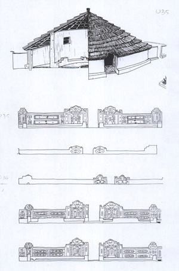

TYOKSVILLE, EASTERN CAPE -
A Survey of the Housing Needs in a Transitional Settlement Area
ABSTRACT
Low cost housing is one of the major social, political and economic issues facing this country today and will remain an important item on our national agenda for many years to come, regardless of the ruling government's ideological base. In spite of this fact, however, many local agencies persist in providing housing units with a minimum of reference to the needs and desires of their client body. In most cases their decision-making is guided by factors of affordability and where human elements are taken into account these are usually based upon outdated historical precedent, anecdotal reference and preconceived cultural assumptions. As a result housing has been reduced to a series of financial formulas which have neatly excised potential residents from the processes involved thereby placing participants - the housing agencies and their recipients - into a capitalist consumer-producer relationship. This means that both parties enter the housing process as potential antagonists and not as partners and collaborators in the resolution of this most thorny of problems.
This project, set in Tyoksville, Uitenhage, represents an attempt to open up new channels of communication between the people concerned and those companies involved in housing development. Residents were asked to identify their preferences on a wide range of subject matter including siting, aesthetic image, spatial usage and self-help projects as well as the more conventional factors of demographic composition and economic activity. Most specifically it was hoped to derive a series of broad guidelines which would inform the developers as to their options and create a base for further interaction between themselves and the community concerned.
PREFACE
In many ways 1976 may be considered to have been a watershed year in the history of southern Africa. It marks a time when our black community once again renewed their struggle for liberation in a forceful and effective manner. More important however, it is also a period when conservative whites began to take heed of black grievances more seriously than they had ever done before.

One of the key issues to emerge from this era was that of housing. It was realised that the blind implementation in the 1970s of a policy designed in the 1950s to meet the needs of the 1930s had produced urban environments which were often squalid, overcrowded and promoted antisocial behaviour. As a result a number of organizations were established in order to address some of the fundamental and most pressing needs in southern Africa's black residential areas.
Seen in the context of the larger housing effort which has been taking place in this country since 1976, this survey ranks as little more than a small link in a larger chain of events. Sadly however much of housing is still being carried out locally by both public authorities and private sector developers without prior consultation with the communities concerned. In this respect then this research is important for it marks the opening of a two-way process of communication between the residents of kwaNobuhle and organizations outside of the town who feel they have the resources, technical know-how and social commitment to become involved in a process of raising their quality of life.
My thanks are therefore extended to the residents of kwaNobuhle Extension 4C, sometimes also referred to as Tyoksville, for the cooperation shown us in the completion of this survey. Their personal warmth and open manner belied the trauma suffered by this same community less than twelve months previously when they underwent removal from their homes of long standing at Xaba.
However, it should be borne in mind that this survey set out to discover only the housing aspirations, wishes and opinions of the residents of kwaNobuhle. As such it is no more than a regional case study and care should be exercised not to award it wider significance than originally intended. Thus whilst the findings of this report may strike a responsive chord among researchers elsewhere in this country, the conclusions arrived at may not necessarily hold true outside their original context.
INTRODUCTION
KwaNobuhle is a dormitory town situated some four kilometers south of Uitenhage, near Port Elizabeth, in the eastern Cape region (figure 1). It has a predominantly black population of about 113,117 persons living on an estimated 17,332 residential sites (Setplan, 1986: figure 2). The average density for the area has been calculated at 6.9 persons per stand.
The town, whose name in Xhosa literally means "a place of beauty", traces its origins back to 1967. It was established in order to house those residents of the old Uitenhage suburbs of Langa, Xaba and New Gubbs who, at that time, were being displaced from their homes by the authorities under provisions of the Group Areas Act. Although these areas included many older and more substantial brick dwellings, over the years these had been extended by means of corrugated iron and timber lean-to shacks. Thus many of these houses were relatively large and, owing to residential pressures in the area, had a high tenancy rate. The resultant population densities threatened to overload the existing infrastructure and, instead of extending the residential framework, the Uitenhage Municipality, under whose jurisdiction these areas fell, chose the cheaper option of building a new settlement outside the town. As a result kwaNobuhle Extension 1, comprising some 2,500 residential sites, was established in 1967. Houses were built by the Municipality on the NE 51/6 model (Calderwood, 1953), consisting of a four-roomed brick structure roofed over with corrugated asbestos sheeting. No ceilings or internal doors were provided and all ablution facilities were located separate from the main house to the rear of the stand. Although roads were already tarred, electricity was only made available to business stands and a small number of neighbouring residences. Road lighting was also limited to a few streets.
Although official reasons given at the time for the removal of people from Uitenhage to kwaNobuhle were unclear and often contradictory, it has since become obvious that this land was required by the town's planners for other residential uses. Removals were made on a block-by-block basis and were accompanied by the wholesale demolition of the residents' old homes. Some efforts were made to also accommodate those families who did not own homes in the old areas, but official lists of them were by no means complete and many were left behind. The authorities also failed to take into account those tenants who were unmarried and thus did not qualify for housing in the new areas. A combination of these factors had the effect of increasing residential densities in those dwellings left standing thereby causing a deterioration in their inhabitants' quality of life.
The removal, at that time, of families from Langa, Xaba and New Gubbs does not appear to have been done forcibly. However many people felt that they had been given little choice in the matter and the move was not a popular one among the people concerned. KwaNobuhle was considered to be windy, removed from town's commercial centre and devoid of the social support groups and amenities which were offered by the older and more established suburbs. House rentals and service levies also stood at about R13.00 per month, a figure which few families could apparently afford at that time. As a result many people are known to have returned back to their old suburbs in Uitenhage, thus further increasing housing pressures in those areas. In many cases residents rebuilt their homes on their previous sites leading to the idiosyncratic sight of lean-to shacks standing on the surviving brick plinths of formerly substantial and well-to-do houses.
In spite of such resistance and the objections posed by Uitenhage's black citizens, kwaNobuhle has continued to expand (figure 2). The town virtually doubled its size in 1974 with the proclamation of Extension 2 and by 1980 it had reached 24% of its present size. Further township developments took place in 1980 and in 1984 with the establishment of Extensions 3, 4A and 4B (Setplan, 1986: figure 2). However the town was to gain 42% of its present population in a brief seven months, between May and November 1986, when the residents of the old Uitenhage suburb of Xaba, also known to whites as Kabah, were resettled in kwaNobuhle. Although the authorities concerned have insisted that residents made this move voluntarily, many of the people involved have claimed that they were removed forcibly from their homes.
Such rapid expansion of the town's population necessitated the proclamation, in quick order, of Extensions 4C, 5, 6, 7 and 8. Official sources have estimated that between 35,258 and 47,423 people were involved in this removal (Setplan, 1986: figure 2) although other sources have placed this figure closer to 80,000 persons (Riordan, 1986). A further three suburbs, involving a total of 3000 new stands, are being planned for development in 1988 with a view to housing the last remaining inhabitants of the Uitenhage suburb of Langa.
Briefly put, expansion has occurred as follows:
Suburb Number Number of Stands Date Developed
Extension 1 2500 1967
Extension 2 2000 1974-75
Extension 3 1815 1980-81
Extension 4 3714 1984-85
Extension 5 187 1984-85
Extension 6 1012 1986
Extension 7 2071 1986
Extension 8 (A & B) 4033 1986
Although these suburbs have not been awarded official names to date, a popular nomenclature has arisen in many of their cases. Since the declaration of the 1985 State of Emergency, Extension 1 and Extension 2 have become known as "Angola" and "Mocambique" respectively. Their analogy to war zones in the minds of the residents is inescapable. Extension 4, on the other hand, displays distinct middle-class aspirations and parts of it have become known as "Comfihomes" after one of the building firms which erected houses there. Other areas of Extension 4 are currently also referred to as "Volksville" owing to the high percentage of Volkswagen employees who live there. Extensions 5, 6, 7 and 8 and parts of Extension 4 are called "Tyoksville" or "Shackville" and owe this name predominantly to the nature of their housing. In more recent times however, Tyoksville has also become known as Khayelitsha, a Xhosa name meaning "New Home". The socio-economic nature of these suburbs also tends to vary considerably. Extensions 1 and 2 were developed by the Uitenhage Municipality and consist almost entirely of NE 51/6 dwellings planned and built as a low-income mass-housing project. Extension 3 was developed by the Bantu Affairs Administration Board (BAAB) but its housing reflects a mixture of the NE 51/6 and the more comfortable and larger NE 51/9 which incorporated an inside bathroom in its structure. The decreasing involvement of Governmental agencies in the construction of housing becomes evident in those parts of Extension 4 developed before 1986, that is to say Sections 4A and 4B, which have a mixture of government-built NE 51/9s and more conventional contractor-built houses. The BAAB however was responsible for the infrastructural development of Extension 4 as a whole. Extensions 4C, 5, 6, 7 and 8 are currently made up almost entirely of owner-built shacks constructed in a variety of scrap materials although in some isolated cases, contractor-built houses are beginning to replace the original lean-to structures. Extension 4C, the subject of this paper, is currently the best developed of these last-mentioned suburbs, being already endowed with a full reticulated infrastructure whilst the others suffer from a rudimentary water delivery and waste removal system and many of their roads are no better than muddy quagmires.
A small number of single sex hostel rooms are also available in kwaNobuhle but as this involves less than 300 persons, their influence on the residential fabric of the town may be considered to be negligible.
The administration of the town has, over the years, been the responsibility of a number of bodies. At its onset, in 1967, this fell with the Uitenhage Municipality but in 1973 its functions were taken over by the Bantu Affairs Administration Board, an agency of the central government department of Bantu Administration. In 1979 this body was incorporated into the larger Eastern Cape Administration Board, although its relationship to central government remained essentially unchanged. Finally, in 1983, the kwaNobuhle Town Council was established and its local administration was reconstituted as a municipality. This remains the state of affairs to the present day.
Although the residential sector of the town has expanded rapidly over the past six or seven years, development in other areas has been slow to follow. To date kwaNobuhle boasts of four small clinics, a day hospital, two high schools, fourteen primary schools, three police stations, one library and a number of churches. The recently completed Civic Centre also includes a Fire Station. Despite this there is little economic development: the town still lacks a recognisable civic heart, it has no centralised shopping area and retail business facilities have been established on a scattered and suburban basis. There are no factories. Electrification has also been slow in spreading and although Extensions 1 to 4 all have street lighting, domestic power reticulation has been available only to those stands fortunate enough to be located in the immediate vicinity of business sites. However plans to extend full reticulation to all sites in Extension 4 by 1988 are well advanced.
The issue of electrification has become particularly bitter in those areas of kwaNobuhle such as Comfihomes and Khayelitsha where residents have already erected substantial houses. Here, a lack of domestic electricity is forcing families to use alternative and more expensive sources of power and denying them the quality of life they feel they are entitled to and are already paying for through their rates.
One of the potential problems which is already becoming evident in kwaNobuhle relates to its vehicular accessibility. Although the town is well situated, being located in close proximity to the motorway joining Uitenhage to Port Elizabeth, its sole link to the outside world is via two roadways, only one of which is linked to the town's main employment and shopping centres. Whilst this may be a valid strategy in terms of sealing the town off during times of civic unrest, a typical feature of Verwoerdian and apartheid-inspired town design, this does not necessarily make for good planning on a human scale. In the long term it may be confidently predicted that this single factor will prevent the area from developing a business centre independent of neighbouring Uitenhage, thus reinforcing the "company store" relationship currently existing between the two communities and promulgate KwaNobuhle's economic dependence upon its neighbour well into the foreseeable future.
SURVEY OBJECTIVES
As the result of preliminary work conducted in the shack suburbs of kwaNobuhle between March and August 1987, Extension 4C, an area involving 1071 residential sites was selected for more intensive research. Although it shared with the remainder of Tyoksville in its name, origins and character of housing, this suburb stood apart from the remainder of the squatter area in that its residents were resettled on stands which already had full infrastructural support. This included reticulated water delivery, sewage removal and a tarred road system. It was perceived that much of the psychological trauma involved in the removal could be overcome relatively quickly in this community through suitable affirmative action.
To this end it was believed that a body like the Urban Foundation, who sponsored this survey, had the technical know-how, infrastructural resources and social commitment to make a relevant contribution to this community in their provision of new housing. Ultimately it was also hoped that such a project will serve as a pilot for more extensive work in the town of kwaNobuhle as a whole.
This survey therefore set out to broaden understanding in the following areas of concern:
This survey therefore set out to broaden understanding in the following areas of concern:
- the demographic profile of the community concerned, including family composition, marital status and work descriptions.
- the origins of these families and the quality of life previously enjoyed by them.
- individual earnings and household incomes as well as family budgeting patterns for this area.
- the processes and building technologies presently employed by local residents in their housing efforts. This included dwelling sizes, current usage of space and subjective response to present housing standards.
- future housing expectations including size of dwelling, style of construction and quality of building standards as well as the residents' willingness to subsidise future housing efforts through sub-letting of premises to outside tenants.
Ultimately this survey set out to achieve four major ends:
- provide an evaluation of current housing standards in this area.
- provide a realistic assessment of the residents' housing needs and future expectations.
- assess the degree to which these could be met under their current economic conditions.
- formulate an architectural brief which would assist in the design and production of future housing in the area.
METHODOLOGY
The survey was conducted in four major stages:
- Stage One took place in October 1986 when a multi-disciplinary team of academics including social workers, planners, medical doctors and an architect visited the general Tyoksville area and conducted an informal survey of its social fabric and physical infrastructure (Riordan, 1986). Data collected by individuals was exchanged at a joint seminar held soon afterwards and a consensus of results arrived at. These are reflected in the Exploratory Survey Results tabled below.
- Stage Two was run between March and September 1987 and took the form of a long-term process of familiarization with Tyoksville during which time the area was transversed on foot, residents were canvassed informally on a variety of topics and some two thousand photographs taken.
- Stage Three involved the running of a small pilot study in an area immediately adjacent to the survey area. As a result a number of small changes of emphasis were made in the phrasing of the questionnaire, one question was omitted entirely and two new ones included.
- Stage Four was comprised of the survey itself.
The survey covered a total of 249 households or 23.2% of the survey area. It was conducted during September and October 1987 by a small group of volunteer workers mostly resident within kwaNobuhle. In this respect some difficulty was initially experienced in finding suitably qualified interviewers. Ultimately however this group was to include in their numbers school teachers, a social worker and a former policeman.
Of the 249 interviews completed, 81.9% were with male and 18.1% with female respondents. This bias is a direct reflection of the family profile for this area where patrifocal families outnumber matrifocal ones by a ratio of four to one.
All of the structures surveyed functioned as domestic dwellings although there is no doubt that in at least nine cases, or 3.6% of the sample, these also served as premises for backyard industries during the daytime. Activities observed during the survey include motor vehicle repairs, freelance liquor sales, broom and mat manufacture and a herbalist's dispensary. A number of dwellings were also observed to operate as week-end church premises for a variety of Christian sects.
EXPLORATORY SURVEY RESULTS
An exploratory survey of the Tyoksville area of kwaNobuhle was conducted in October 1986. This revealed the following:
- That although residents had, in theory, been given the opportunity of resettling according to family and neighbourhood preferences, in practice this had seldom occurred. Thus little trace could be found of previous social support systems and neighbourhood unit organizations. Most people had been resettled next door to total strangers and often did not know where old friends or family relations had been placed. This compounded the trauma inevitably caused by such removals.
- Initial settlement was made in canvas tents loaned by the South African Army for this purpose. Thereafter residents were expected to erect their own dwellings. At the time of the preliminary survey in March 1987 a number of Tyoksville families were still living in such temporary quarters and by September a few tents were still to be observed (figure 3).
- Residents of Extensions 6, 7 and 8 were living under rudimentary conditions with a minimum of infrastructural support. Water was delivered by municipal tankers and placed into communal reservoirs; human waste went into prefabricated toilet units; and roads were laid out and graded in gravel. In reality however, communal facilities were often vandalised by the residents themselves; water supplies, when unpolluted, were insufficient for local use and tankers were often late for their deliveries; most latrines inspected were hopelessly clogged up; and roads were virtually impassable after a heavy rainfall. This situation was worsened by the fact that, owing to the situation of civil unrest prevailing in the country at that time, service teams were unwilling to enter these areas.
- Bus services ran infrequently, were remote from the areas they were intended to serve and were considered to be too expensive for a community which suffered from a high unemployment rate (Riordan, 1986).
- Health services were non-existent.
- Schools had not yet been re-established.
- Large numbers of unemployed men and scholars were observed to be moving aimlessly about the area. Although at no stage, then or since, have the organizers of this survey come under personal threat, the prevailing mood was perceived to be one of resentment and repressed anger.
Within a week of this preliminary visit taking place, fighting is recorded to have broken out in kwaNobuhle between supporters of AZAPO, UDF and amaAfrica factions. Sporadic outbreaks of violence have been taking place in this area ever since that time.
Although a number of commentators have subsequently attempted to ascribe these conflicts to a variety of ideological differences manifesting themselves within the black community, informal enquiries made within the survey area have given rise to a variety of interpretations. Generally however these events may be perceived to be the result of two major factors:
- Tensions existing between the more settled and conservative residents of Extensions 1, 2 and 3, where housing is of a more permanent and conventional nature, and those of Tyoksville who, as recent settlers, live under impermanent and less affluent conditions.
- ii. Tensions existing within the squatter area itself, reflecting that community's recent trauma of removal and their precarious status of land tenure.
FINDINGS OF THE SURVEY
A. DEMOGRAPHIC PROFILE
The 249 dwellings surveyed yielded a total of 1268 persons giving an average of 5.09 persons per household. This housing stock provided a total of 957 rooms thus giving an average density of 1.32 persons per room. Assuming that at least one room per dwelling was used as a cooking and living area, thus making it uninhabitable as a sleeping space, this left a total of 714 rooms giving an effective residential density of 1.77 persons per room. After married couples, who were assumed to be sleeping two to a room, were removed from the equation, this still left 518 rooms to sleep 876 persons thus giving a density of 1.69 persons per room. The highest individual population density discovered was 5 persons per room in a single case where 15 persons were recorded to inhabit a three-roomed dwelling.
Further analysis reveals that 155 dwellings or 62.2% of the sample involved households of five persons or less. In this case a total of 587 persons was recorded to inhabit 554 rooms giving a density of 1.06 persons per room. By comparison the remaining 94 dwellings or 37.8% of the sample involved households of six persons or more giving a total of 689 persons residing in 403 rooms or a density of 1.71 persons per room. This indicates that although the size of the average household for the survey is 5.09 persons, just over 60% of the sample involved households with an average size of 3.78 persons living in dwellings with at least one room per resident. On the other hand, just below 40% of the sample involved households of 7.24 persons with a population density approaching two persons per room.
The average family unit in KwaNobuhle is likely to be nuclear and comprise a father, 41 years, a mother, 36 years, and three minor children aged 15, 13 and 11 years respectively. However, at least one in every five families was likely to include a grandparent in its makeup, whilst another one in every six would have rented space out to a lodger.
The male/female ratio of the sample group for all age groups showed a slight bias towards women. However this imbalance became more pronounced in the 0-15 age group where girls outnumbered boys by 11:9.
The overall population sample shared a distinct bias towards youth with 51.3% of people being 20 years or less whilst a massive 62.4% was below 25 years of age. By comparison only 4.2% of the group stood above the 65-year mark (figure 4).
The area's potential work force, defined as any person who was neither a scholar, a student or a pensioner, comprised only 42.7% of the sample. Of this total 21% were unemployed, 23% were housewives and 25% were unskilled labourers. This means that 68.5% of the potential work force was either fully unemployed, technically unemployed or highly vulnerable to unemployment. Only 19.2% of the survey was possessed of a technical skill and only 0.4% was engaged in the professions. An analysis of these figures reveals three significant factors:
- the number of professional people such as doctors, nurses and teachers stands at a low level of 0.4% of the sample. This may be attributed to the fact that middle- range salary earners have resettled in higher income areas such as KwaMagxaki and KwaDwesi closer to Port Elizabeth. There is therefore a real danger that a potential middle-income group may no longer be developing within the local broad urban context but has already reached the status of a privileged elite outside of it.
- 68.5% of the potential work force, or five persons in every eight, are either fully unemployed, being currently out of work, technically unemployed, being employed as housewives and hence not engaged in direct wage earning, or highly vulnerable to unemployment, being in current employ as unskilled labourers, street sweepers, cleaners and so forth.
- 19.2% of the people surveyed were found to be skilled crafters, artisans and machine operators, all of whom, under favourable economic conditions, are potential high wage earners.
These figures may also be interpreted to mean that a community of some 1268 persons is reliant upon an effective work force of 315 wage earners, or 24.8% of the group, for their continued economic survival.
B. ORIGINS
The majority, or 89% of the survey sample originated from the Uitenhage suburbs of Xaba and Langa. The average length of previous residence was 13 years per family although a sizeable number, or 41.1% of the sample, had lived in their respective residences for an average of 32 years. The majority, or 93.6%, had previously lived in lean-to dwellings of varying quality.
However one should beware of reading this data in a pejorative sense. When questioned on the subject, former residents of Xaba remembered their old homes with affection. They claimed them to have been relatively well sheltered from the wind and complained that resettlement had taken place in such a way as to disrupt their previous social structures and scatter their support groups. They now lived next door to strangers and had not as yet discovered the new homes of old friends and family relations. Rightly or wrongly, they perceived themselves to have enjoyed a higher quality of life in their previous homes than they did presently.
An overwhelming majority of respondents, 90.4%, claimed to have been forcibly removed from their previous homes and resettled in kwaNobuhle. The remaining 9.6% gave reasons of convenience and security of tenure. This data should be read in context with the fact that 89.4% of this sample had originated from the older black suburbs of Uitenhage. The inferences of this data are clear: the residents of Xaba were "persuaded" by the local authorities to vacate the homes they had occupied in some cases for over three generations, and "remove" themselves to a site some six kilometres away from their places of employment, areas of shopping and points of transport. Althought this dislocation took place between July and December 1986 the issue still appears to be a major source of discontent among residents some eighteen months later.
C. FINANCIAL PROFILE
It was found that the survey sample of 427 persons generated a total of R100,433 per month in wages and other earnings. This gave an average of R236 per person per month. However the population profile also included 66 pensioners each of whom had a monthly income of R97. When these figures were deducted from the total it was found that a corrected survey sample of 361 wage earners generated a total of R94,031 per month giving an average earning of R260 per worker per month. Assuming that most businesses are open for an average of 21 working days per month, or 168 hours, this represents a wage of R1.55 per hour or R12.40 per day. It was also noted that 72.4% of all income generators in the survey earned R300 or less per month (figure 5).
It was found that the 249 households in the survey sample generated a total of R105,871 per month in assorted earnings. These included the weekly wages of 250 blue collar workers, the monthly salaries of 35 white collar workers, the bi-monthly pension and disability grants of 72 retired workers and the incomes of 30 self-employed entrepreneurs engaged in a variety of pursuits from hawking to running an informal taxi service. This means that the average household in the study area earned a total of R425 per month. According to the latest figures available in November 1987 from the Institute of Planning Research at UPE, the Household Subsistence Level (HSL) for a family of five living in the Uitenhage region is R376 per month (Institute for Planning Research, 1987). This figure however is regarded as a minimum and the same body has estimated a more realistic Household Effective Level (HEL) to stand between R489 and R564 per month (figure 6).
The implication of this data is that a total of 138 households, or 55.4% of the sample, had an income equal to or less than a minimum HSL and 74.2% had an income equal to or less than a realistic HEL. It was also noted that 25.3% of families in the survey earned R200 per month or less.
The average family had an expenditure of R347 per month. Alcohol and tobacco accounted for 10.3% of this total whilst education took up only 7.5% of this sum. Savings seem to account for 21.5% of the family budget. The discrepancy between the household income and expenditure totals may be attributed to a number of factors:
- Many respondents failed to answer this question either in total or in parts. This data therefore is not a true reflection of the budget of an average household in the survey area.
- Incorrect estimation of expenses during the course of interviews. It was felt that in many cases respondents gave global figures without necessarily checking their data.
- A variety of repayments and contributions were not taken into account during the formulation of this question. These included Hire Purchase agreements, lay-byes, money repayments and co-operative contributions.
- Other minor expenditures such as Burial Society contributions, insurance premiums, and leisure expenses were similarly omitted from this survey.
- It is probable that there was a deliberate underestimation of alcohol and tobacco consumption and an overstatement of monthly savings.
It should be noted that although the results of this question are being included in this report for the sake of completion, this data is not borne out by the experience of field workers in kwaNobuhle itself. The figures set out above for alcohol and tobacco consumption, for instance, are believed to stand at approximately double the stated amount whilst those for savings are almost unbelievably high.
Householders were also asked to estimate the sum of money which they personally believed they could afford to repay on a house every month. The question itself was not aimed at establishing the exact amount involved but at the residents' subjective perception of how much they could afford to pay, or were willing to contribute. The majority of respondents, 69.1%, set this figure at R50 per month or less, whilst 90.2% gave an amount of R100 or less. Only 9.8% thought they could contribute a sum of R200 and above.
D. PRESENT HOUSING STANDARDS
The survey found that 204 dwellings or 81.9% of the sample were built either by the householders themselves or as part of a cooperative family process. Of these a small minority, or 4% of the sample, had allowed local municipal authorities to build an initial one or two-roomed core house for them and had then extended it themselves. The remaining 45 families, or 18.1% of the sample, had gone to other outside sources including the local municipality, Uitenhage Sawmills or private building contractors. Thus sources outside the community had been involved in the production of only 22.1% or just over one-fifth of the dwellings in the survey.
As is implied by its name the dwellings of Tyoksville are built in a variety of materials, usually the cast-offs of the consumer society about them. The predominant method of construction in 98.8% of the survey is a timber frame clad in either timber, iron or zinc sheeting, or a mixture thereof, although in some singular instances other materials such as plywood (3.2%) or bricks (2%) were also used. Industrial window frames were recorded in only 26.7% of dwellings and most window and door openings were created in scrap timber by the residents themselves. Cement was recorded as having been used in only 2.8% of all dwellings (figure 7).
These materials were obtained their materials from a variety of sources. The major part, or 67.4%, are known to have been bought or received secondhand. Most prominent among the latter were firms such as Volkswagen SA, Veldspun and Gubb & Inggs who made available their discarded crates to their employees at no charge and between them accounted for materials used in 27.4% of recorded cases. Other prominent sources of recycled materials were a variety of local scrap-yards and backyard dealers. It was interesting to note that at least 4.2% originated from farm areas, presumably involving the owner in some transport costs, whilst only a small amount, or 4.7% originated from the resident's previous dwelling.
New materials were used in the construction of 32.6% of dwellings in the area. In the majority of cases, or 62.1%, these originated from the Uitenhage Saw Mills whilst the core houses erected by the local municipality accounted for 30.5% of the total.
The cost of dwellings in this area varied greatly between nil, in one instance, through to R17,000. The average cost for the 238 units covered in the survey was R866 although this figure was distorted by the presence of eight conventionally built units whose cost varied between R7,000 and R17,000 each. When the latter were removed from the total the average cost per unit was reduced dramatically to R609. It is significant to note that 10.1% of units surveyed cost less than R100 each, that 59.5% cost less than R500 each and that 91.5% cost less than R2000 each.
The conclusion which may be drawn from this data is that the majority of people living in this area exercise a great deal of discretion and financial care in their provision of temporary shelter. In most cases a figure of R600 represents a financial threshold which most residents are unwilling to exceed in this type of housing. This may be an important psychological consideration when considering the potential for upgrading existing shack structures.
The clear shortage of dwellings in the R1000 to R6000 bracket, which accounts for only 13.5% of the survey, seems to indicate that the lower figure represents a ceiling of financial commitment to this form of housing. However, when this information is read in conjunction with the financial data arrived at elsewhere in this survey, it becomes obvious that, despite their preference for housing built in a solid and conventional manner, the people concerned cannot afford to erect structures of a higher standard through existing commercial means.
Figures also show that the 249 residential units recorded in the sample provided a total stock of 954 rooms or 3.8 rooms per dwelling. A detailed breakdown of the data reveals that four-roomed houses accounted for 44.9% of the sample whilst 82.7% of units are either three, four or five-roomed.
Respondents were also questioned as to the spatial values they awarded to their indoor living areas. For want of detailed plans of each dwelling, a task which would have been impossible under the circumstances, generic nouns, such as kitchen, lounge and dining room were used to describe the various rooms. It was recognised from the outset that these names were originally derived in the context of Western European society and would find limited application in an African community. For this reason field workers were briefed on this point and definitions discussed at length. Thus although the data which follows uses conventional room nouns for the purposes of this report, during interviews field researchers described rooms by their functions. The kitchen, for example, would have been referred to as "a place for cooking" and so on.
The returns indicated that a degree of overlap exists between the kitchen as cooking space, the lounge as an entertainment space and the dining room as an eating space. Thus, although most households were found to have a clearly defined cooking area, a minority of families also used the lounge, the dining room and, in some instances, the master bedroom, for this same purpose. Similar overlaps were perceived to exist in eating, sleeping and entertainment habits.
- Cooking was predominantly found to take place in one specialised space, the kitchen, although a small minority of families also used the lounge and dining room for this function. A small group of families, chiefly those inhabiting single-roomed core dwellings, also used the bedroom to this end.
- Eating was almost equally divided between the kitchen and lounge area. The dining room played a relatively minor role in this activity but a significant amount also took place in the various bedrooms.
- Sleeping, predictably, centred upon the various bedrooms although, in a small minority of cases, the lounge, dining room and even the kitchen served as additional sleeping space.
- Entertainment of visitors took place in a number of indoor spaces, predominantly the lounge (38.6%) and dining room (26.6%) which proved to be interchangeable in this regard. A not inconsiderable amount of entertainment also took place in the kitchen (22.2%). Bedrooms were little used for this function leading to the conclusion that they were regarded primarily as areas of privacy not easily accessible to non-family members. This was arrived at in conjunction with another section of the survey where it was found that nearly 40% of persons interviewed were forced to share their sleeping space with another member of the family.
On an average it was found that residents viewed a single-roomed structure primarily as a bedroom space. The conclusion therefore was that, in such cases and through necessity, cooking would be performed entirely out of doors. In two-roomed units the bedroom remained the single most important room in the house, followed by an entertainment/eating area with cooking being done internally in only in 36% of cases.
However once the dwelling grew to include a third room, the bedroom maintained its place as the most important room of the house but the cooking function was brought indoors almost entirely and nearly supplanted the combined eating and entertainment area as the second most important space in the home. By the time the dwelling became a four-roomed unit, the kitchen was firmly ensconced, alongside separate bedroom spaces for parents and children, as the most important room in the dwelling. Thereafter, as the structure increased in size to five and six rooms, greater emphasis began to be made upon additional bedroom space for children and increasing distinction was made between the functions of a lounge and a dining room as specialised spaces in their own right.
Although some seven- and eight-roomed dwellings were also surveyed, their sample was too small for relevant conclusions to be arrived at.
Generally speaking residents were unhappy with the technical performance of their homes, but a significant proportion of them, nearly 40%, were more positive in their approach. However, residents were unanimous in condemning their shacks as being cold, unhealthy, flea-infested and unable to keep out the dust and rain. Only a small minority specifically objected to their aesthetic appearance.
E. FUTURE HOUSING EXPECTATIONS
Residents interviewed were unanimous in their preference for a solid and conventional brick-built house. Given the hypothetical choice between a timber-framed, timber clad dwelling, one that was timber-framed but clad in galvanized corrugated iron sheeting, a zenzele or modified wattle-and-daub structure and a conventional brick house, 99.6% opted for the more conventional brick technology whilst other building methods received virtually no support.
Despite the fact that 81.9% of persons interviewed had originally taken an active part in the erection of their own dwellings, the majority of these same people now expressed an unwillingness to take a part in the processes of building new homes for themselves at some future date. However such reluctance should not be interpreted as apathy on the part of the community concerned but rather as an indication of their preference for strongly built conventional housing and their unfamiliarity with the technology involved in its construction.
However, even though respondents expressed in almost every case an overwhelming reluctance to become involved in the production processes of almost all types of new housing for themselves, a moderate number were prepared to provide themselves with a core house (20.5%) whilst a smaller number were willing to build their own house provided the materials were provided (13.7%).
87.9/% of the sample considered an ideal house size to consist of four to six rooms. In the case of a four-roomed dwelling these would consist of a kitchen, a bedroom for the parents, another for the children and a multi-purpose entertainment area. Five-roomed dwellings might include either an internal bathroom or an additional children’s bedroom whilst a six-roomed unit would include both. The priority given to either garaging or tenants' rooms was so small as to be negligible. The preference for internal bathrooms as against external facilities was overwhelming but opinions on whether such a room should include a WC or keep it in a separate cubicle were evenly divided.
Householders were also asked how many rooms would be included in such a hypothetical home. Responses varied between three and eight rooms with a six-roomed structure being considered as ideal by a majority of people. However 87.9% of the sample considered an ideal house size to vary between four and six rooms. In view of the fact that the average family in the survey sample consisted of five persons, this would give an ideal population density between 0.8 and 1.2 persons per room.
Respondents were also asked to establish the order of preference which they, as owners of a hypothetical two-roomed core unit, would be likely to establish in a long-term programme of expansion to their dwellings. They were requested to begin with two rooms of their choice and thereafter to increase the size of their dwelling one room at a time to a maximum of six rooms.
It was found that the first priority of 78.5% of respondents was the provision of a main bedroom. This was followed by a lounge/dining area, in 60.1% of cases, and a kitchen, in 45.5% of cases. In view of the interchangeability found to exist between kitchen and family entertainment areas during earlier data analysis, it becomes possible to make a number of assumptions:
- that the provision of an area of privacy is the first priority of a family
- that a degree of cooking may be done in an entertainment area or alternatively
- that the cooking area is a focal point of family interaction and
- that under certain conditions, cooking may be permitted to take place out of doors.
This leads to the conclusion that a two-roomed core unit would consist of one bedroom and one multi-purpose eating/cooking area with the potential of converting this to an additional bedroom space at night.
Only 3.0% of respondents would have included a bathroom/toilet as part of their two-roomed core house. This figure remains steady between 2.9 and 6.3% for three and four-roomed units but jumps to 14.7% for a five-roomed house. This indicates that most persons interviewed as part of this survey sample rated a bathroom/toilet as being of relatively low priority for any dwelling smaller than five rooms but would have included one into their home should it have been either five or six rooms in size.
When asked what room they would add next onto this hypothetical two roomed dwelling, respondents' opinions were divided in three main directions. A small number (14.4%) wished to add on an extra bedroom for their children whilst two almost equal groups chose a kitchen (25.1) and a lounge/dining space (28.4%) respectively.
Subsequent questioning for a fourth room showed that although respondents were still concerned with the three main areas of main bedroom, kitchen and living/dining space, the need for an extra bedroom for the children became of overriding importance.
The choice of a fifth room posed few problems to respondents. The majority opted for a bathroom and toilet although a smaller number also wished to increase their childrens' accommodation. Significantly the idea of a bedroom for a tenant and a garage also appeared for the first time.
The final choice of a sixth and last room to be added to the hypothetical core house left little doubt as to the respondent's wishes. The majority decided in favour of a bathroom although some householders expressed a need for additional children’s bedrooms. The garage also began to feature more strongly at this stage. The idea of a bedroom to be rented out to tenants met with little approval.
It is probable therefore that a six-roomed dwelling unit in this area would include a lounge, possibly incorporating the dining room as well, a kitchen, a bathroom/toilet and two bedrooms. A sixth room would function either as a third bedroom or as a separate dining room.
Finally respondents were shown a chart with the perspective drawings of a variety of dwellings ranging from traditional rural structures to modern suburban cottages (figure 8). The following were the choices made:
Lean-to farm cottage 1.7%
51/6 Soweto house 25.0%
51/11 semi-detached Soweto house 5.0%
Single storey suburban cottage 55.4%
Traditional Xhosa cottage 0.8%
Lean-to farm cottage 2.9%
Squatter shack 2.1%
Double storey suburban cottage 7.1%
Although results showed a marked preference for a suburban style of construction and, in the process, firmly rejected farm structures, a sizeable proportion, or 30% of the sample, showed a preference for an aesthetic long associated in this country with governmental mass housing schemes. It was also noted that respondents' tastes steered away from semi-detached dwellings and double-storeyed structures. The majority of residents (94%) also preferred their homes to be located either to the front or the centre of their stands.
Most respondents, 84.3% of them, were found to be overwhelmingly against the concept of taking in tenants, even if the practice subsidised repayments on their home by a substantial amount. Many householders commented that they had been tenants in someone else's home all their lives and knew at first hand of the inconvenience involved, whilst another group did not wish to be bothered with it and stated that they valued their privacy. Understandably therefore 83.2% of the householders surveyed were also not prepared to build special rooms for the purpose of sub-letting to tenants whilst the remaining 16.8% stated that such rooms, if necessary, should be located apart from the main dwelling.
This response is understandable in view of the living conditions known to have existed in the survey group's former home at Xaba where tenancy was widespread and social conditions prevailing in that suburb were attributed in great part to its overcrowding. However, demographic data obtained during the course of this survey reveals that approximately one in every five families surveyed included at least one tenant in their household make-up.
CONCLUSIONS (Frescura, 1987)
It is evident from the above data that, for the purposes of future housing developments, the residents of kwaNobuhle Extension 4C cannot be assumed to be a homogenous body. Although the families interviewed were often consistent in many of their preferences and preconceptions, they were separated by two major factors vital in the make-up and planning of any large mass housing project:
- The size and composition of households.
- The affordability of their housing.
Both varied to such a degree that any plans to upgrade the area's housing stock will have to employ a wide range of options. These will have to take cognisance of the following data:
- Approximately 39% of families in the survey area consisted of four persons or less. This indicates that either a degree of family planning is taking place or that a sizeable proportion of families are in their early stages of growth. Whatever the case, this figure seems to indicate a potential market for three roomed core houses.
- The low number of either tenants or family members recorded in the survey sample, present in less than 37% of interviews, seems to indicate that extended families are a factor in one household out of every three. In this respect it was also noted that a discrepancy existed between the population figures derived during the course of this survey and those put forward by official sources. Similar studies conducted elsewhere in this country have consistently shown official figures to be lower than those obtained through independent research. In this survey however, the opposite was found to be true, most particularly in the case of household sizes where the official figure for the town of kwaNobuhle as a whole stands at an average of 6.9 persons whereas that for Extension 4C was derived at 5.09 persons. An explanation for this may be found in the high level of resistance discovered to exist among inhabitants of Extension 4C to the concept of subsidising repayments on a house through tenancy. It is possible that the residents of the older suburbs of kwaNobuhle, upon whom current official figures are based, have reached a level of home ownership where the subletting of rooms to tenants has become a matter of economic survival. On the other hand, the inhabitants of Tyoksville, whose present financial commitment to their housing is limited to a R21.21 site and service charge, have not yet reached a stage where the financing of their homes has achieved onerous proportions. This state of affairs may well change at some future date as this community becomes more settled and begins to erect more substantial dwellings for itself.
- 26% of wage earners were engaged in jobs which afforded a measure of financial security and work tenure. The families of this group could thus be considered to be likely candidates for housing in the R15,000 to R20,000 bracket. However less than 5% of households declared incomes which would allow them similar housing. It is probable that the number of families qualifying for housing in this price range lies between these two figures but is unlikely to be higher than 10% of the survey sample. It is probable that the housing needs of the remaining 90% may be met by a housing package in the R6,000 to R10,000 range.
- 27.7% of the survey sample expressed a willingness to take part in a self-help housing process. The exact nature of the sweat equity was not specified but was most likely to comprise participation in the construction of a core dwelling. In view of the relatively low number of persons interviewed who were prepared to take part in such a project, it is recommended that attitudes towards the concepts of self-help construction and the upgrading of existing dwellings be examined in greater depth with leaders of the communities concerned. Current unwillingness to participate in self-help projects has been attributed by residents to their unfamiliarity with a more conventional technology but this may be overcome by a housing programme which includes in its make-up local employment opportunities and on-site training schemes for residents of the area.
- An approximate 50% of families surveyed tended to require dwellings of four to five rooms. They were also largely the same group which could least afford such housing.
- An opportunity also exists for the extension of informal sector infrastructures. This survey established that local involvement in such economic activities currently stands at 9% of the potential workforce. However a further 44% were either unemployed or active as housewives thus giving this aspect of local life great potential for expansion and growth.
POSTSCRIPT
This paper was originally published in “Urban Forum” Vol 1, No 1, 1990: 49-74, under the title Tyoksville, Eastern Cape. Unless otherwise indicated, most of the information presented was obtained during the course of interviews with residents of kwaNobuhle Extension 4C as well as officials of the KwaNobuhle Town Council.
BIBLIOGRAPHY
CALDERWOOD, DM. 1953. Native Housing in South Africa. Doctoral Thesis, University of the Witwatersrand, Johannesburg.
FRESCURA, Franco. 1987. A Survey of Squatter Housing in KwaNobuhle Extension 4C, also known as Tyoksville. Department of Architecture, University of Port Elizabeth.
INSTITUTE FOR PLANNING RESEARCH. 1987. The Household Subsistence Level in the Major Urban Centres of the Republic of South Africa. University of Port Elizabeth, Fact Paper No 66, March 1987.
SETPLAN. 1986. KwaNobuhle Framework Plan: Historical Development, Figure 2. Port Elizabeth.
RIORDAN, Rory. 1986. Visit to KwaNobuhle Tent Town. Port Elizabeth: Operation Real South Africa.
LIST OF ILLUSTRATIONS
Figure 1: The Port Elizabeth-Uitenhage Metropolitan Region
Figure 2: KwaNobuhle suburb development, 1967-1987
Figure 3: Sqatter dwelling and army tent, October 1986
Figure 4: Age profile of residents, KwaNobuhle Ext 4C
Figure 5: Worker income levels, KwaNobuhle Ext 4C
Figure 6: Household income levels, KwaNobuhle Ext 4C
Figure 7: Dwellings, KwaNobuhle Ext 4C
Figure 8: Housing choices presented to respondents